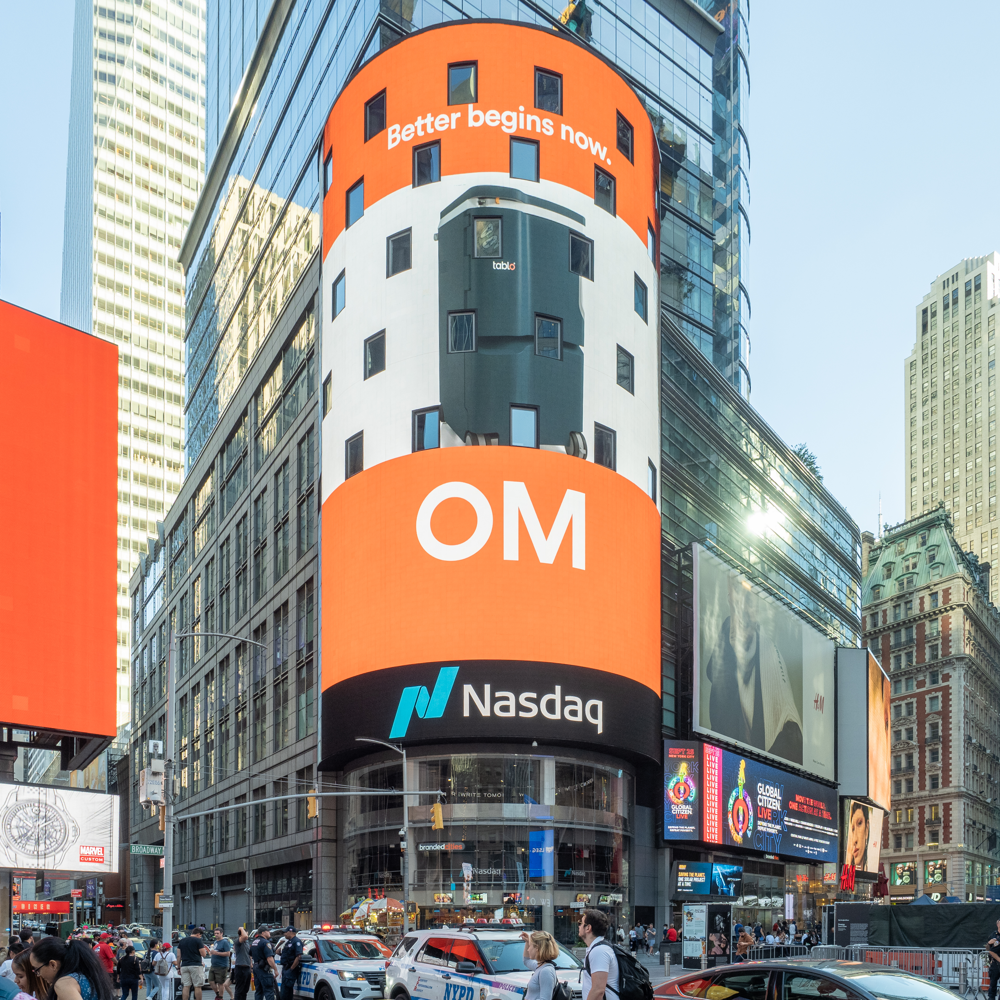

Wall Street chiude in deciso rialzo venerdì 11 settembre 2026, interrompendo una serie negativa di quattro sedute consecutive. Il Dow Jones guadagna +509 punti (+0,98%) chiudendo a 52.573 punti, l'S&P 500 sale del +0,86% a 7.657 punti e il Nasdaq Composite avanza del +0,96% a 26.333 punti. Il catalizzatore è il CPI (Consumer Price Index — indice dei prezzi al consumo) di agosto, uscito in linea con le attese al 3,4% annuo: un segnale che l'inflazione non sta accelerando, sufficiente per far respirare i mercati prima della riunione della Federal Reserve del 15-16 settembre.
Perché conta: dopo quattro giorni di perdite legate al petrolio sopra i 100 dollari e ai timori sui tassi, il CPI in linea con le attese ha evitato la "sorpresa negativa" che avrebbe potuto spingere la Fed ad alzare i tassi più del previsto. Le borse hanno risposto con un rally di sollievo (Relief Rally — rally di sollievo). Tuttavia la riunione Fed della prossima settimana rimane un momento critico: con il CPI al 3,4% e il petrolio ancora elevato, un ulteriore rialzo dei tassi è tutt'altro che escluso.
Il CPI di agosto: nessuna sorpresa, mercati sollevati
Il Bureau of Labor Statistics americano ha pubblicato questa mattina il CPI (Consumer Price Index — indice dei prezzi al consumo) di agosto 2026. Il dato annuo si è attestato al 3,4%, in linea con le attese del consensus e identico al dato di luglio. Il CPI mensile ha mostrato un +0,4% rispetto a luglio (dopo il +0,1% del mese precedente). Il CPI core (al netto di energia e alimentari), che la Fed monitora con maggiore attenzione, ha raggiunto il 2,4% annuo.
Pur restando ben al di sopra dell'obiettivo Fed del 2%, la conferma del dato ha tolto una fonte di incertezza: i mercati temevano una sorpresa al rialzo che avrebbe potuto forzare un rialzo più aggressivo. Il fatto che il dato sia risultato "in linea" è stato letto come notizia positiva, almeno nel breve termine.
💡 Impara: CPI vs PPI — due misure dell'inflazione
Il CPI (Consumer Price Index — indice dei prezzi al consumo) misura quanto pagano le famiglie per beni e servizi al dettaglio. Il PPI (Producer Price Index — indice dei prezzi alla produzione) misura i prezzi all'ingrosso, prima che arrivino ai consumatori. Quando il PPI sale (come è successo giovedì scorso con +5,4%), spesso significa che i prezzi al consumo seguiranno: le aziende trasferiscono i costi maggiori ai clienti. Per questo la Fed monitora entrambi, anche se il CPI è il riferimento principale per le decisioni sui tassi.
Gli indici USA: chiusure di venerdì 11 settembre 2026
| Indice | Valore | Variazione giornaliera | Variazione settimanale |
|---|---|---|---|
| Dow Jones | 52.573 | +0,98% | −1,41% |
| S&P 500 | 7.657 | +0,86% | −0,97% |
| Nasdaq Composite | 26.333 | +0,96% | −1,01% |
Nonostante il rimbalzo di venerdì, i tre indici hanno chiuso la settimana in territorio negativo: il Dow Jones cede il −1,41% su base settimanale, il peggior risultato dall'inizio di settembre. Le pressioni del petrolio sopra i 100 dollari per tutta la settimana e i timori pre-Fed hanno pesato sul sentiment complessivo.
Oracle: la trimestrale che ha acceso il rally tech
Il principale contributo positivo della seduta è arrivato da Oracle (ORCL), il colosso del software e dell'infrastruttura cloud, che ha pubblicato mercoledì sera i risultati del primo trimestre dell'anno fiscale 2027 (Q1 FY2027 — primo trimestre dell'anno fiscale 2027). I dati hanno battuto le attese su tutti i fronti:
| Metrica | Risultato effettivo | Stima consensus | Variazione YoY |
|---|---|---|---|
| Ricavi totali | $19,3 miliardi | $19,1 miliardi | +30% |
| EPS (Earnings Per Share — utile per azione) adj. | $1,92 | $1,74 | +30% |
| Ricavi cloud totali | $11,6 miliardi | — | +62% |
| Ricavi cloud infra (IaaS) | $7,4 miliardi | — | +121% |
Oracle ha anche alzato la guidance per l'intero anno fiscale: ricavi attesi ad almeno $90 miliardi e EPS non-GAAP a $8,10. La crescita del 121% nell'infrastruttura cloud (IaaS — Infrastructure as a Service, infrastruttura come servizio) riflette la corsa delle aziende a costruire capacità di elaborazione per l'intelligenza artificiale. Il titolo ha guadagnato circa il +8% e ha trascinato verso l'alto l'intero comparto tecnologico.
💡 Impara: EPS (Earnings Per Share — utile per azione)
L'EPS è l'utile netto di un'azienda diviso per il numero di azioni in circolazione. Se Oracle ha guadagnato $1,92 per azione contro i $1,74 attesi dagli analisti, significa che l'azienda ha generato più profitti del previsto. Un EPS "battuto" è generalmente positivo per il titolo. Si distingue tra EPS GAAP (principi contabili standard) e EPS adjusted (rettificato, che esclude voci straordinarie come ammortamenti e stock option): quello adjusted è spesso usato per confronti tra trimestri perché riflette meglio la performance operativa ricorrente.
Commodities e obbligazioni: la settimana del petrolio
Il petrolio ha arretrato leggermente rispetto ai massimi della settimana, con il Brent (il greggio di riferimento europeo) che si stabilizza intorno a $106 al barile dopo aver toccato punte oltre i 107 dollari giovedì. Il WTI (West Texas Intermediate — greggio americano di riferimento) cede a circa $102. Su base settimanale entrambi guadagnano oltre il +12%, spinti dalle tensioni nello Stretto di Hormuz.
| Asset | Valore | Var. giornaliera | Var. settimanale |
|---|---|---|---|
| Brent Crude | ~$106 | −0,9% | +12,0% |
| WTI Crude | ~$102 | −0,8% | +12,3% |
| Oro (Gold Spot) | ~$4.350 | −1,1% | −2,1% |
| Bitcoin | ~$77.000 | −1,5% | −3,8% |
| Treasury 10Y | ~4,95% | — | +18 pb |
I Treasury decennali (Treasury Note — obbligazioni decennali del Tesoro USA) si avvicinano alla soglia psicologica del 5% di rendimento, ai massimi dell'anno. L'oro cede perché quando i tassi reali salgono, il metallo prezioso — che non paga interessi — diventa meno attraente rispetto alle obbligazioni. Bitcoin soffre dello stesso meccanismo: quando il costo del denaro aumenta, gli investitori abbandonano gli asset speculativi per parcheggiare liquidità in strumenti a rendimento garantito.
Settimana e outlook: Fed il 15-16 settembre
I migliori titoli della settimana sull'S&P 500 includono Lumentum Holdings (+9%), Hewlett Packard Enterprise (+7,15%) e TKO Group (+5,89%). Il peggiore è stato Cooper Companies (−22%). Nel complesso, i settori difensivi (utility, salute) hanno sovraperformato il tech durante la settimana, ma il rally di Oracle ha riportato in vantaggio i titoli growth nella giornata di venerdì.
Tutti gli occhi sono ora puntati sulla riunione del FOMC (Federal Open Market Committee — Comitato di politica monetaria della Fed) del 15-16 settembre. Con il CPI al 3,4%, il PPI al 5,4% e il petrolio sopra i 100 dollari, i mercati scontano con probabilità superiore al 90% un rialzo di 25 punti base (bp) dei Fed Funds Rate. La vera incognita è il tono della comunicazione di Jerome Powell (o del presidente Kevin Warsh): un orientamento più restrittivo di quanto atteso potrebbe vanificare il rally di venerdì.
📌 Da ricordare — 11 settembre 2026
S&P 500 +0,86% a 7.657 · Dow +509 pt a 52.573 · Nasdaq +0,96% a 26.333 · CPI agosto +3,4% YoY (+0,4% mensile) · Oracle Q1 FY2027: ricavi $19,3 mld (+30%), EPS adj $1,92 (vs stima $1,74) · Brent ~$106 · WTI ~$102 · Treasury 10Y ~4,95% · Fed riunisce 15-16 settembre